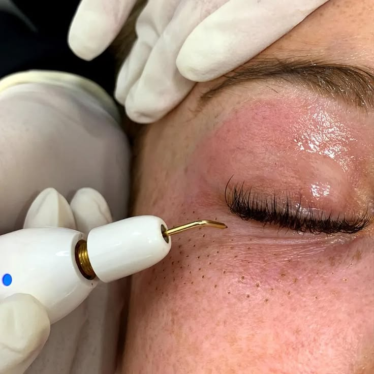
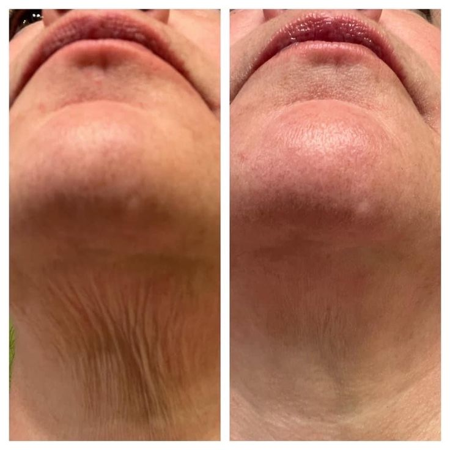
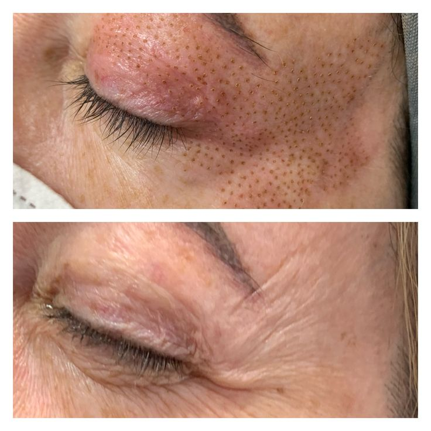
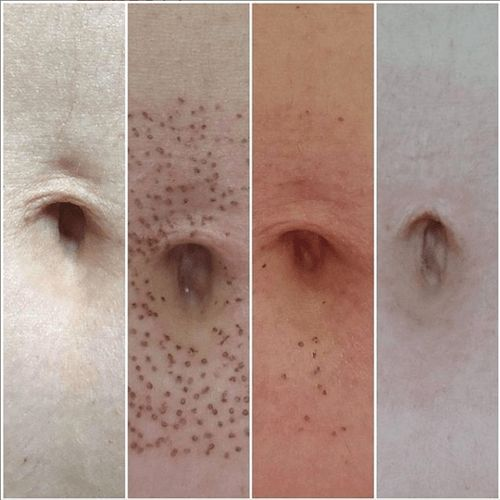
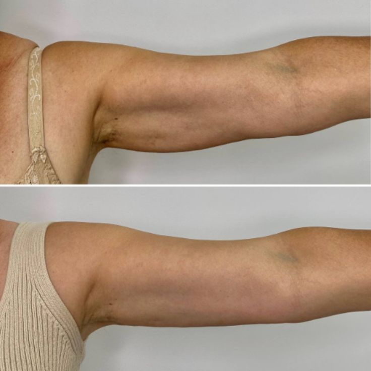
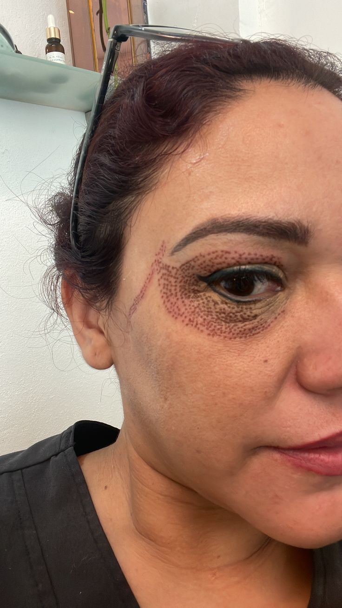
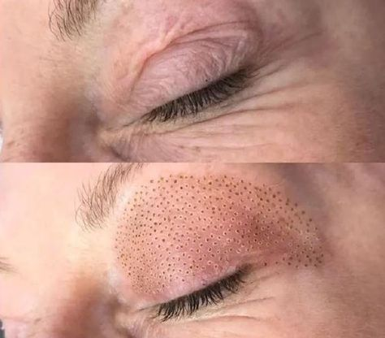
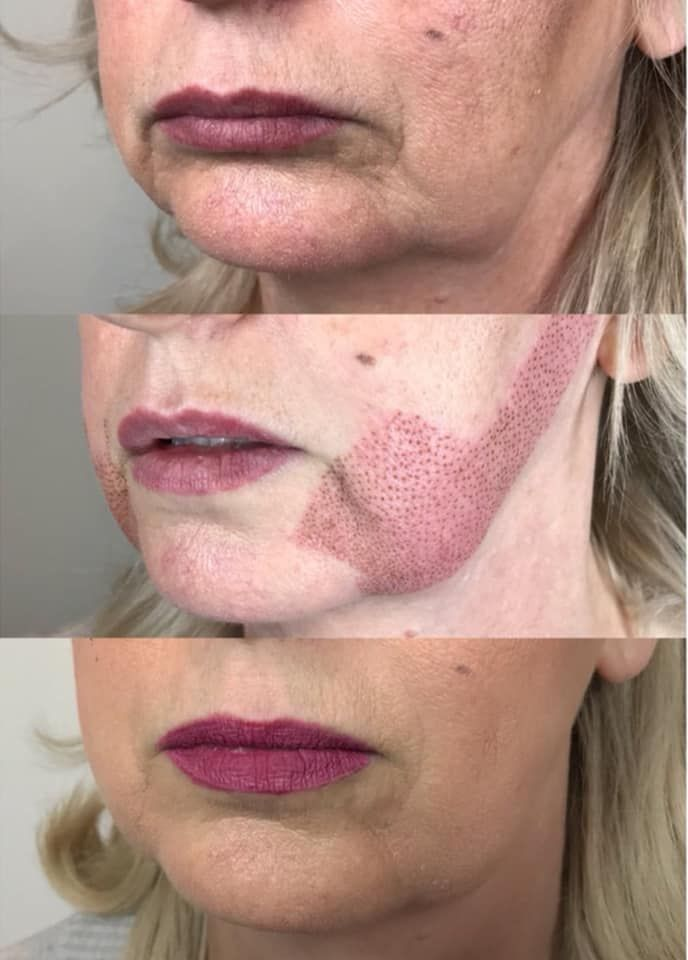

El tratamiento más solicitado para tensar párpados, mejorar arrugas, tratar flacidez y rejuvenecer la piel de forma natural sin cirugía invasiva.

Estimula la producción natural de colágeno y elastina ayudando a rejuvenecer diferentes zonas del rostro y cuerpo con resultados progresivos y naturales.
Uno de los procedimientos no invasivos más populares para rejuvenecimiento facial y corporal.
No requiere bisturí ni procedimientos invasivos complejos.
Ayuda a activar la regeneración natural de la piel progresivamente.
La piel puede verse más firme y rejuvenecida conforme avanza la recuperación.
La mayoría de pacientes retoman actividades en pocos días.
El Plasma Fibroblast puede utilizarse en múltiples zonas faciales y corporales dependiendo del tipo de piel y valoración profesional.

Ayuda a mejorar líneas finas, textura y firmeza general del rostro.

Tratamiento utilizado para rejuvenecer la apariencia de las manos y mejorar textura.

Ideal para tratar pequeñas zonas de flacidez y mejorar firmeza superficial.

Contribuye a tensar y redefinir el contorno inferior facial.

Ayuda a mejorar arrugas finas y flacidez en el cuello.

Puede ayudar a mejorar la apariencia superficial de ciertas estrías.
Ambos tratamientos son utilizados para rejuvenecimiento cutáneo, pero cada uno tiene diferencias importantes.
Todo paciente debe pasar primero por una valoración profesional personalizada.
Es normal presentar pequeños puntos temporales y leve inflamación los primeros días. La recuperación depende de la zona tratada y cuidados posteriores.
Muchas personas notan cambios iniciales después de la recuperación, mientras el colágeno continúa estimulándose progresivamente.
No. Por eso realizamos valoración previa para determinar si el tratamiento es adecuado según el tipo de piel y objetivos.
Los resultados pueden variar según hábitos, edad, cuidados y respuesta individual de cada paciente.
Sí. Permite evaluar flacidez, calidad de piel, antecedentes y expectativas antes de indicar cualquier protocolo.
Dependiendo del caso puede complementarse con otros protocolos estéticos para potenciar resultados.
Espacio diseñado para mostrar fotografías y videos reales antes y después del tratamiento.








Nuestro equipo evaluará tu tipo de piel, nivel de flacidez y objetivos para recomendarte el protocolo más adecuado.